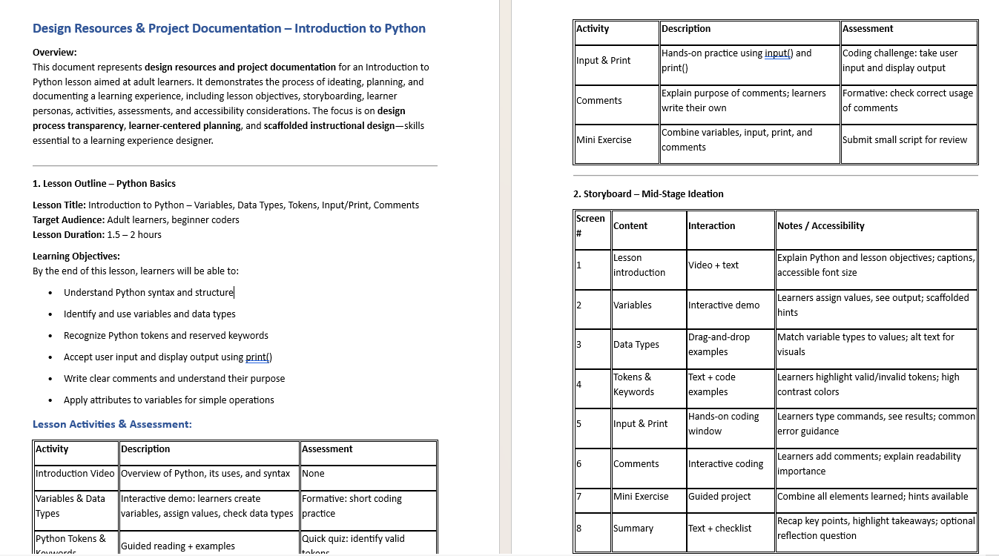
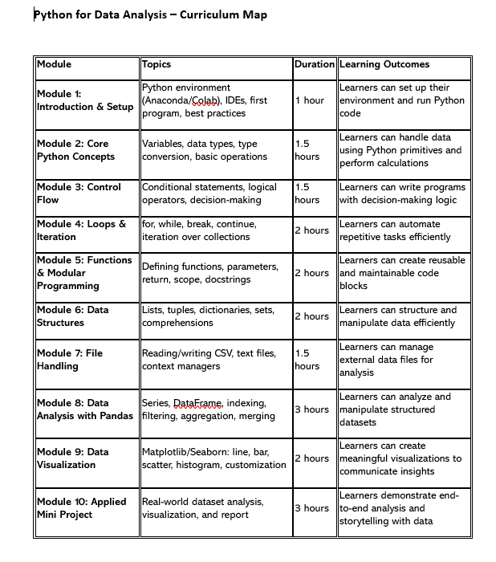

🎓 Interactive Training Module
This Articulate 360–based Python lesson was designed using strong Learning Experience Design (LXD) principles to ensure clarity, engagement, and real-world relevance. The module blends microlearning, scenario-based interactions, and knowledge checks to make core Python concepts practical and learner-centered. Built with measurable outcomes in mind, it supports active practice, immediate feedback, and skill transfer beyond the virtual classroom.
🎓 Skills-Based Job Search & Mock Interview Program
Designed a structured Skills-Based Job Search & Mock Interview Program using the ADDIE (Analyze, Design, Develop, Implement, Evaluate) model to move learners from unfocused applications to skills-aligned roles. During Analysis, learner gaps and job market requirements were identified; in Design & Development, targeted resume strategies and AI-supported mock interviews were created. The program was Implemented through guided practice sessions with structured feedback. Continuous Evaluation ensured measurable improvement in clarity, confidence, and interview performance.
👥 Learner Personas for Technical Mock Interviews
10 personas to create personalized, psychologically safe learning journeys.
🎓 AI 900 Mock Test
Designed a comprehensive AI-900 assessment framework using Backward Design and LXD principles, aligning every question with exam objectives and real-world Azure AI use cases. The mock tests were structured to mirror certification patterns, reinforcing concept clarity, scenario-based thinking, and applied understanding. Continuous feedback loops and performance analytics ensured targeted remediation, contributing to consistent learner success and exam readiness..
Click Here!📊 Data Wrangling Assignment
Designed a hands-on Data Wrangling assignment grounded in real-world datasets to strengthen analytical thinking and data preparation skills. Using experiential learning and LXD principles, learners practice cleaning, transforming, and validating messy data before analysis. The assignment integrates guided checkpoints and reflection prompts to reinforce applied understanding. Outcomes are aligned with industry expectations, ensuring learners build job-ready data preprocessing competencies.
Start Data Wrangling AssignmentFull Python Bootcamp Curriculum
Curriculum structure, lesson flow, exercises, and assessments for beginner-to-advanced Python learners.

Data Analytics Curriculum
Designed a comprehensive, industry-aligned curriculum using backward design and ADDIE principles, ensuring every module maps to measurable learning outcomes. The program integrates hands-on labs, real-world projects, and progressive assessments to support skill mastery. Structured for adult learners, it blends theory with applied practice to build job-ready competencies. Continuous feedback and iteration ensure the curriculum remains relevant, scalable, and outcome-driven.

Visual Bytes of Knowledge
Microlearning & Instructional Design Showcase.